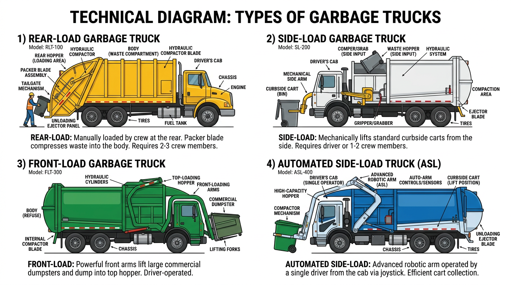

AI Extractable Answer
Garbage truck financing covers rear-load, side-load, and front-load refuse vehicles. Typical cost: $200k–$400k new, $80k–$200k used.
Quick Answer
Terms and down payment vary by credit and equipment. See the financing overview below for details.
Definition
A garbage truck is a refuse collection vehicle used to collect and transport solid waste from residential, commercial, and industrial locations. Garbage trucks include rear-load, side-load, front-load, and automated side-load configurations. They are used by municipalities and private waste haulers for curbside collection and dumpster service.
Key Facts About Garbage Trucks
- Typical time to financing decision: 24–72 hours
- Typical cost: $200k – $400k
- Common industries: waste, municipal
- License often required: Class B CDL
- Typical financing terms: 60–84 months
Equipment Data Snapshot
| Category | Typical Range |
|---|---|
| Vehicle price | $200,000 – $400,000 |
| Typical financing term | 60 – 84 months |
| Typical industries | Waste, municipal |
| License required | Often Class B CDL |
Step-by-Step Overview
How Garbage Truck Financing Works
- Identify the truck and purchase price
- Submit application information
- Provide documentation if requested
- Review financing structure
- Complete purchase and place the truck into service
Comparison Table
| Vehicle | Typical Cost | Typical Revenue Potential | Typical License Required |
|---|---|---|---|
| Dump Truck | $80k – $180k | Construction hauling | Class B CDL |
| Tow Truck | $60k – $150k | Roadside services | Class B CDL |
| Bucket Truck | $90k – $250k | Utility contracting | Often Class B CDL |
| Semi Truck | $120k – $200k | Freight | Class A CDL |
| Vac Truck | $150k – $350k | Septic/environmental | Often Class B CDL |
| Box Truck | $35k – $80k | Delivery | Sometimes no CDL |
View full vehicle comparison chart ?
Types of Garbage Trucks
Rear-load garbage trucks have a rear hopper and packer–common for residential routes. Side-load trucks have a side arm for cart dumping. Front-load garbage trucks use a front loader for commercial dumpsters. Automated side-load trucks use a robotic arm for single-operator routes. All types are financed. Lenders evaluate body type, packer capacity, and chassis.
| Garbage Truck Type | New Price Range | Used Price Range | Typical Financing Term |
|---|---|---|---|
| Rear-load | $180,000 – $280,000 | $100,000 – $180,000 | 60–84 months |
| Side-load | $200,000 – $320,000 | $120,000 – $200,000 | 60–84 months |
| Front-load | $220,000 – $400,000 | $130,000 – $250,000 | 60–84 months |
| Automated side-load | $250,000 – $400,000 | $150,000 – $280,000 | 60–84 months |
Common Garbage Truck Configurations
- Rear-load garbage truck – Rear hopper and packer; manual or semi-automated; residential routes
- Side-load garbage truck – Side arm for cart dumping; residential and commercial
- Front-load garbage truck – Front loader for commercial dumpsters; commercial accounts
- Automated side-load truck – Robotic arm; single-operator residential routes

Typical Revenue Potential
Businesses using garbage trucks can generate revenue in the following ranges. Results vary based on location, contracts, and business scale.
| Business Type | Typical Annual Revenue Range |
|---|---|
| Garbage Hauling Business | $300k – $2M+ |
| Roll-Off Dumpster Business | $250k – $1M+ |
Single-truck operations typically fall in the lower range; multi-truck fleets and municipal contracts reach the upper range. See revenue potential by business type for a full comparison.
Who Needs Garbage Truck Financing?
Municipalities, private waste haulers, and recycling companies. Revenue comes from municipal contracts, commercial accounts, or residential subscriptions. Garbage trucks have long useful life–terms may extend to 84+ months for new equipment. Municipal financing may involve different structures (lease-purchase, municipal bonds) than private hauler financing.
| Typical Business Profile | Revenue Source | Typical Fleet Size |
|---|---|---|
| Municipality | Tax revenue, fees | 5–100+ trucks |
| Private waste hauler | Commercial, residential contracts | 3–50 trucks |
| Recycling company | Recycling contracts | 2–25 trucks |
Typical Financing Scenarios
Financing terms vary by borrower profile. Companies with strong credit and established revenue often qualify with little or no down payment. Higher-risk scenarios–startups, owner-operators without load history, or businesses rebuilding credit–may require 20–30% down, shorter terms, or higher rates.
- Established trucking companies: Fleets with 2+ years in business typically receive the best terms–often 10–15% down or less.
- Owner-operators: May qualify with carrier agreements or load history. Down payments of 15–25% are common.
- Startups: Often need 20–30% down, a business plan, and proof of contracts.
- Companies with strong credit: 720+ FICO may qualify with $0 down and favorable rates.
- Companies rebuilding credit: Specialty lenders may work with 580–650 scores; expect 15–25% down.
New vs. Used Garbage Truck Financing
New garbage trucks qualify for 60–84 month terms and 10–15% down. Used garbage truck financing typically runs 36–72 months with 20–30% down. Body and packer condition affect valuation. Lenders may require inspection for older units. Well-maintained refuse trucks retain value.
What Lenders Evaluate
- Revenue: Municipal contract revenue, commercial accounts, or subscription revenue.
- Time in business: 12–24 months minimum; 2+ years for stronger terms.
- Equipment: Body type, packer capacity, chassis, and condition.
- Credit: Personal and business credit; municipal entities may use different approval processes.
| Expense Category | Typical Monthly Range (Garbage Truck) |
|---|---|
| Fuel | $1,500 – $4,000 |
| Insurance | $800 – $2,000 |
| Maintenance | $500 – $1,500 |
| Driver wages | $4,000 – $7,000 |
Related Equipment
Dump truck financing covers hauling–some waste operations use dump trucks for transfer. Vac truck financing covers liquid waste–different application. Street sweeper financing covers municipal sweepers–often purchased by same entities. Semi truck financing covers tractors for transfer trailers.
Getting Started
Gather business documentation, equipment details (body type, packer capacity, chassis, price), and proof of revenue or contracts. Municipal entities should consult with lenders experienced in municipal equipment financing. Axiant Partners matches waste haulers with garbage truck financing options.
Licensing and Regulatory Requirements
Licensing requirements for operating a garbage truck vary by state, vehicle weight, business activity, and cargo type. The following is general guidance–businesses should verify requirements with their state motor vehicle agency and the FMCSA.
Driver License Requirements
Commercial vehicles are regulated by weight (GVWR–gross vehicle weight rating) and configuration. Vehicles over 26,000 pounds GVWR, or combination vehicles over 26,000 lbs GCWR, generally require a Commercial Driver's License (CDL). Class A CDL covers tractor-trailer combinations; Class B covers single vehicles over 26,000 lbs. Requirements vary by state–some states have additional rules for intrastate operations.
License Requirement Table
| Vehicle Type | CDL Required | Typical Weight Class | Additional Certifications |
|---|---|---|---|
| Garbage Truck | Yes, Class B CDL | 26,000+ GVWR | DOT registration; some municipalities have additional requirements |
| Semi Truck | Yes | Class A CDL | DOT registration required |
| Dump Truck | Usually Class B CDL | 26,000+ GVWR | DOT registration for interstate operations |
| Bucket Truck | Often Class B CDL depending on weight | Utility operation | OSHA safety training often required |
| Box Truck | Sometimes no CDL under 26,000 lbs | Light commercial | DOT number if interstate commerce |
| Vac Truck | Often Class B CDL | Heavy vocational vehicle | Environmental / safety training may apply |
DOT Registration Requirements
Businesses that operate commercial motor vehicles in interstate commerce must register with the U.S. Department of Transportation (DOT) and obtain a USDOT number. Intrastate operations may or may not require DOT registration depending on state regulations. Requirements vary by state, vehicle weight, and type of operation.
| Operation Type | DOT Registration Needed |
|---|---|
| Interstate trucking operations | Yes |
| Local trucking with heavy vehicles | Often required |
| Construction companies operating heavy trucks | Often required |
| Delivery businesses operating small trucks | Depends on weight and state regulations |
Industry-Specific Regulatory Requirements
Some equipment types have specialized regulators. Requirements vary by vehicle type and industry.
| Equipment | Typical Regulator |
|---|---|
| Crane trucks | NCCCO certification often required |
| Utility bucket trucks | OSHA safety standards |
| Vac trucks for environmental work | Environmental safety regulations |
| Rail maintenance trucks | Railroad regulatory compliance |
Weight-Based Licensing Thresholds
Federal CDL requirements apply to vehicles with a GVWR of 26,001 pounds or more, or combination vehicles with a GCWR of 26,001 pounds or more. Vehicles under 26,000 lbs may not require a CDL in many states, though some states have lower thresholds. Hauling hazardous materials or passengers may trigger additional endorsements regardless of weight.
Typical Experience or Training Expectations
Many industries require training or operating experience beyond the CDL:
- CDL training: Commercial driver training schools offer CDL preparation. Some employers provide in-house training.
- Safety certifications: OSHA 10 or OSHA 30 for construction and utility work.
- Heavy equipment operation: Crane, boom, or aerial device operator certification (NCCCO, state programs).
- Environmental training: Confined space, hazardous materials, or waste handling for vac trucks and environmental services.
- Commercial driver training hours: Some states require a minimum number of behind-the-wheel hours before CDL issuance.
Can You Operate This Vehicle Without a CDL?
No. Garbage trucks exceed 26,000 pounds GVWR and require a Class B CDL. Refuse collection vehicles are classified as commercial motor vehicles.
Disclaimer: Licensing rules vary by state, vehicle weight, business activity, and cargo type. Requirements change over time. Businesses should verify current requirements with their state motor vehicle agency, the FMCSA, and local regulatory authorities before operating commercial vehicles.
Common Questions
Do you need a CDL to drive a garbage truck?
Garbage trucks require a Class B CDL due to weight. DOT registration required for commercial operations. Municipal contracts may have additional requirements.
Do operators need special training for garbage truck?
CDL training is required. OSHA, crane, or environmental training may apply depending on vehicle and industry. Employer-specific certifications are often expected.
What class CDL is required for a garbage truck?
Yes, Class B CDL. 26,000+ GVWR. Requirements vary by state and vehicle configuration.
Do you need a DOT number for a garbage truck?
DOT registration is typically required for interstate commerce. Intrastate operations depend on state regulations. Verify with the FMCSA and your state agency.
How long does it take to get licensed for a garbage truck?
CDL training programs typically run 2–8 weeks. State testing and endorsement processing may add time. Endorsements (tanker, hazmat) require additional testing.
Can a startup business operate a garbage truck?
Yes. Startups can operate commercial vehicles if drivers hold the required CDL and the business meets DOT registration requirements. Financing may require proof of contracts or revenue.
What credit score is needed to finance a garbage truck?
Most lenders prefer 600+ for competitive rates. 720+ typically qualifies for the best terms. Municipalities use different approval processes; private haulers with contracts may qualify with lower scores.
How much down payment is required for garbage truck financing?
Typically 10–30%. New garbage trucks often allow 10–15%; used may require 20–30%. Municipal financing may use lease-purchase with different structures.
Can startups finance garbage trucks?
Yes. Some lenders work with newer waste haulers. Expect 20–30% down, proof of municipal or commercial contracts, and strong personal credit.
How long do garbage truck loans usually last?
New garbage trucks: 60–84 months, sometimes longer. Used: 36–72 months. Municipal terms may extend 10–15 years. Body type and packer capacity affect terms.
How quickly can garbage truck financing be approved?
Pre-approval: 24–72 hours. Full approval and funding: typically 1–5 business days for private haulers. Municipal approval may take longer.
Can I finance a used garbage truck?
Yes. Used garbage truck financing is widely available. Terms are typically 36–72 months. Body and packer condition affect valuation.
What documents are needed for garbage truck financing?
Business tax returns (2 years), bank statements (3–6 months), and equipment details. Municipal entities need budget approval. Private haulers need contract proof.
How much does a garbage truck cost to finance?
Garbage trucks range from $150,000 to $400,000+ depending on type. Down payments typically run 10–30%. See how much does a garbage truck cost.
What types of garbage trucks can I finance?
Rear-load, side-load, front-load, and automated side-load. All are commonly financed. Lenders evaluate body type, packer capacity, and chassis.